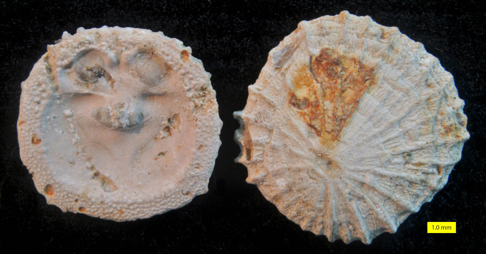

We met this group in the video. It is actually a really important one, because it represents the greatest diversity of brachiopods, both today and in the fossil record. The group maps to the more traditional Articulata in older taxonomies. The model below shows a typical example, with many of the bits labelled for you.
A modern brachiopod, Laqueus sp. from Japan, a member of a major group called the terebratulids. Specimen maximum length ~4cm
To help you get an idea of the internal anatomy, which is hard to see on 3D models, I've placed an image below.
The diductor muscles, which leave the diductor scars, open the valves, whilst the adductors close them. Some of these species have a structure supporting the lophophore (called the brachidium, FYI). Interestingly, this group lacks an anus (they just shoot waste out of their mouth), and are generally epifaunal. Some members of this group have crenulations - where the commissure zig-zags, increasing the area of the opening for feeding, but not its width, and strengthening the
shell.
This group also has a median fold and sulcus, which helps to separate incoming from outgoing water. You can see both of these features in the fossil below, also a rhynchonelliform:
A fossil brachiopodtypical of the order order Spiriferida: Mucrospirifer mrkonensis. This specimen is Devonian in age (it's from the Arkona Shale of Ontario, Canada). Maximum dimension ~5cm.
Gymnotoceras beachi, which you met above, is actually a ceratite, if you want to contrast it with these two!
Linguliformea
Let's meet this cool little group then. The modern example of a brachiopod at the top of this page is an example of Lingula which typifies this group (you may remember from the lecture that they have no hinge, and make their shell out of organophosphate). They have a large, and muscular pedicle, and adductor muscles to open and close the valves, which are often quite rectangular. Modern forms are burrowers, and can tolerate brackish waters - in fact this gorup
specialises in inter- to subtidal habitats.
The model below shows members of this clade in a rock - see if you can get an idea of their shell shape from what you can see:
This is actually the brachiopod Obolus matinalis. It's Cambrian, and was found in Polk County, Wisconsin. Specimen ~7 cm long.
Craniiformea
Let's finish with these critters. They are inarticulate brachiopods, but have calcareous valves which are often rather circular in outline. These are actually an arrangement called punctate (they are perforated). They generally lack a pedicle and instead cement to a hard surface, often another brachiopod.
I'm afraid I've not been able to find a single 3D model of a brachiopod from this group, so instead I've put another image of the group so you can get an idea of what they look like.

Isocrania costata, a member of the family Craniidae from the Upper Maastrichtian (Upper Cretaceous). Source: Mark A. Wilson.
Bivalves vs Brachiopods
Next, I suggest you load the two models below, and satisfy yourself as to which is a bivalve, and which is a brachiopod. I've chosen fairly similar looking species, so look out for those planes of symmetry.
Brachiopod
Bivalve
{kind=link}